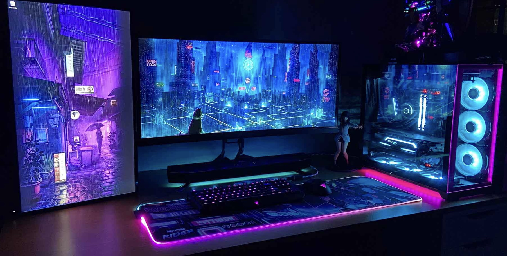
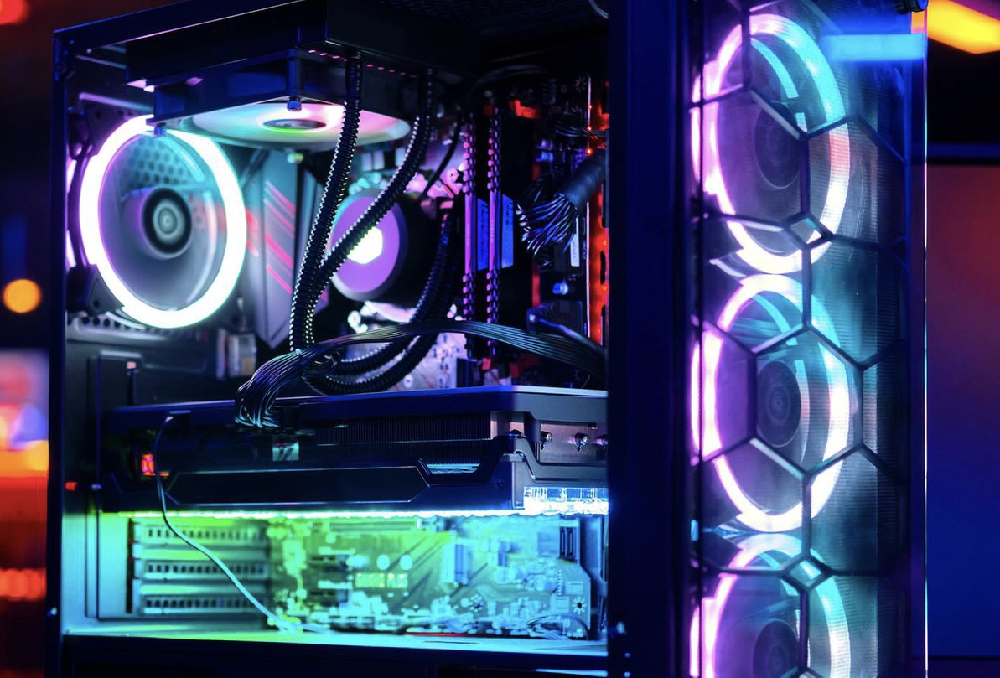
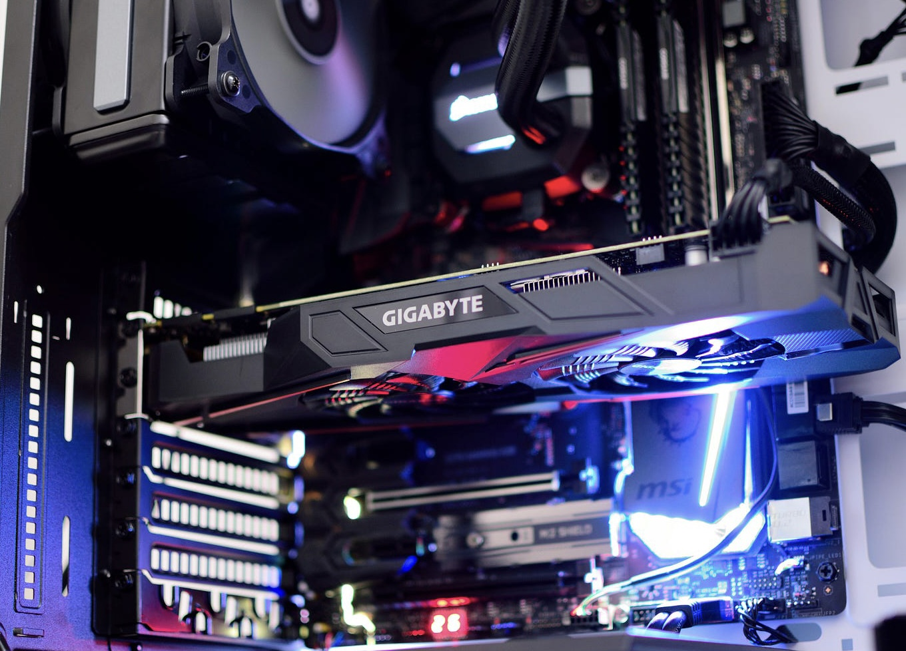
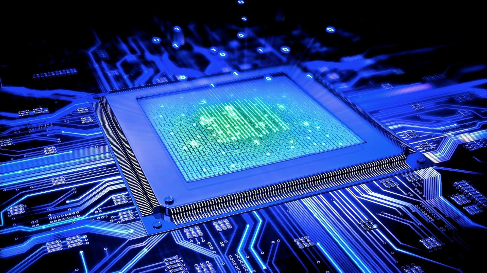
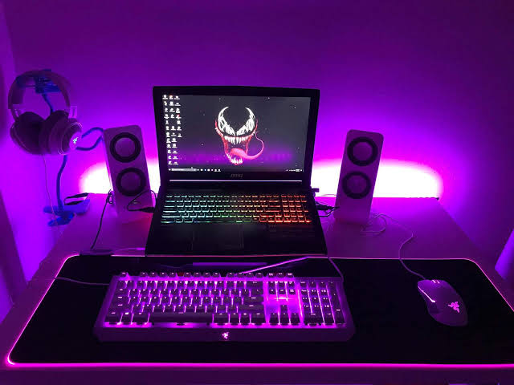

Introduction
Welcome to our comprehensive article about gaming computers. In this article, we will explore the key components, graphics capabilities, and performance considerations of gaming computers. Whether you're a casual gamer or an avid enthusiast, understanding the essentials of gaming computers is crucial for an immersive gaming experience.
In today's digital age, computers have become an integral part of our lives, empowering us with unparalleled capabilities. While most of us are familiar with conventional computers that serve a wide range of purposes, there exists another realm of computing that pushes the boundaries of what we thought was possible. Enter specialized computers, the extraordinary machines tailored for specific fields, such as gaming, scientific simulations, and more. In this article, we will delve into the fascinating world of specialized computers, exploring their unique components, graphics capabilities, performance, and ultimately appreciating their remarkable contributions.
Components
Gaming computers consist of various essential components, including the processor (CPU), graphics card (GPU), memory (RAM), storage (SSD/HDD), and motherboard. Each component plays a crucial role in determining the overall performance and gaming capabilities of a computer.
When it comes to gaming, ordinary computers often struggle to meet the demands of graphically intensive games that require high frame rates and seamless gameplay. Specialized gaming computers, on the other hand, are meticulously designed with powerful components that elevate the gaming experience to new heights.
These gaming rigs boast cutting-edge processors, such as Intel Core i9 or AMD Ryzen, which provide exceptional multi-threaded performance for smooth gameplay. Accompanying the processor is ample system memory, usually in the form of high-speed DDR4 RAM, to ensure quick access to game assets and reduce loading times.
To handle the graphical demands, gaming computers feature top-tier graphics cards, like the NVIDIA GeForce RTX series or AMD Radeon RX GPUs. These dedicated graphics cards come equipped with advanced technologies like real-time ray tracing and artificial intelligence-enhanced rendering, enabling stunning visuals and lifelike environments. Additionally, high-performance storage drives, such as solid-state drives (SSDs), ensure faster game loading and reduced latency, enhancing the overall gaming experience.
Additionally, peripherals such as gaming keyboards, mice, and monitors are also important for an optimal gaming setup. These components, combined with a powerful gaming computer, can enhance your gaming experience and provide you with a competitive edge.
Graphics Capabilities
The graphics card is a vital component for gaming computers. It is responsible for rendering and displaying the visuals of a game on your monitor. Modern gaming graphics cards come with advanced features, such as real-time ray tracing and high-resolution support, which can deliver stunning graphics and lifelike experiences.
One of the most remarkable aspects of specialized computers lies in their graphics capabilities. For professionals in fields like animation, visual effects, and graphic design, these computers unlock an array of tools that enable the creation of breathtaking visuals.
Specialized computers for graphics-intensive tasks often employ workstation-grade graphics cards, such as the NVIDIA Quadro or AMD Radeon Pro series. These GPUs offer immense computational power and specialized features, including optimized drivers and extensive memory, to handle complex rendering tasks with ease. Whether it's designing intricate 3D models or rendering lifelike animations, specialized graphics computers provide the tools necessary for professionals to bring their visions to life.
Performance
When it comes to performance, gaming computers outshine their conventional counterparts by delivering unparalleled speed and efficiency tailored to demanding applications.
Gaming computers leverage powerful processors, such as Intel Core i9 or AMD Ryzen, that are specifically optimized for gaming. These processors offer exceptional multi-threaded performance, enabling smooth gameplay even in demanding scenarios. Combined with ample system memory and high-speed storage drives, gaming computers ensure quick access to game assets, reduced loading times, and minimal latency, resulting in a seamless gaming experience.
Furthermore, gaming computers often come equipped with advanced cooling systems to keep the components running at optimal temperatures, preventing performance throttling during extended gaming sessions. Additionally, the inclusion of high-refresh-rate monitors and adaptive sync technologies, like NVIDIA G-SYNC or AMD FreeSync, eliminates screen tearing and provides buttery-smooth visuals, enhancing the overall gaming experience.
Gaming computers are designed to deliver consistent and reliable performance, allowing gamers to fully immerse themselves in their favorite games and compete at the highest levels.
Conclusion
Gaming computers have transformed the way we experience games, offering unprecedented performance, stunning visuals, and immersive gameplay. These specialized machines, equipped with powerful components and cutting-edge technologies, push the boundaries of what's possible in gaming.
Whether you're a casual gamer looking for an enjoyable gaming experience or a professional gamer or content creator seeking the highest level of performance and visual fidelity, gaming computers have you covered. The relentless pursuit of innovation in the gaming industry ensures that gaming computers will continue to evolve, delivering even more realistic graphics, faster frame rates, and new immersive experiences.
As technology advances, gaming computers will remain at the forefront, empowering gamers to explore new virtual worlds, compete in thrilling battles, and embark on unforgettable adventures. The world of gaming computers is an exciting realm where technology and creativity converge, enabling us to push the boundaries of gaming and unlock new possibilities.